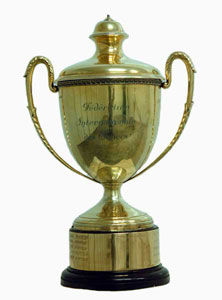

CHESS OLYMPIADS
Jan van Reek
Pgn Chess Olympiads (1½ Mb of selected annotated games) Zip of Chess Olympiads
The success of the Olympic Summer Games in Paris 1924 had a great appeal to chess organizers. National federations came to Paris in 1924 and FIDE (Fédération Internationale des Échecs) was proclaimed by fifteen nations. Alexander Rueb became the first president.
|  | |
| Golmayo, Vajda,
Tschepurnoff, Apsenieks, Euwe, Colle, Matisons, Palau Finalists of Paris 1924 (Havasi is missing) |
Hamilton Russell Cup |
Four usual characteristics of
chess Olympiads were present in London 1927: 1. The team tournament was
the main event. 2. National teams of four players met. 3. Professionals
were allowed. 4. Challenge trophy became the golden Hamilton Russell
Cup. Hungary won the first official Olympiad.
The second one became The Hague 1928. The FIDE
wanted to participate in the Olympic Games and invited only amateurs.
Although the Games took place in the Netherlands, chess did not even
become a demonstration sport. FIDE seemed to be an amateurish family.
But thereafter, a biannual team event of professionals and amateurs
became a great success! Hamburg 1930 was the first full event. The USA
won gold in 1931, 1933, 1935 and 1937. FIDE survived an economic
crisis.
| Fine, Kupchik, officer, Horowitz, Frank & Carrie Marshall and Dake on a boat to Warsaw 1935 |
Germany had been excluded in 1933, 1935 and 1937 due to the Aryan paragraph. Although the ban of Jews had remained, a German team was allowed in 1939. Preliminaries were organised, because more than twenty countries participated. The start of the finals in Buenos Aires coincided with the invasion of Poland by Germany. England withdrew. Some teams refused to play Germany, the future winners. Eventually, many chess players stayed in Argentina.
| Copacabana transported European players from Buenos Aires to Antwerp in 1939 | Kotov, Geller, Smyslov, Bronstein, Keres, Botvinnik and Bondarevsky (captain) in Amsterdam 1954 |
The Olympiads were resumed in Dubrovnik 1950. A new era started, when the Soviet Union took part in Helsinki 1952. They dominated many Olympiads. Preliminaries occurred from 1952 until 1974.
| Sheraton Hotel Playing Hall of Tel Aviv 1964 |
Fischer and
Spassky have drawn in Havana 1966. Tal and Polugaevsky are watching. |
The Swiss System was applied from 1976. Haifa 1976 became deviant, because it was boycotted by many countries. Hungary won Buenos Aires 1978. The Soviet Union triumphed from 1980 until 1990. The number of participating countries rose above one-hundred.
| Jan Timman and Robert Byrne
in Haifa 1976 |
Stamps show the success of William Hook in 1980 | Thessaloniki 1984 |
When the Soviet Union and
Yugoslavia fell apart, this had great consequences for Manila 1992.
The new republics became strong competitors. Russia was the main
force and won from 1992 until 2002. Hereafter, other former Soviet
republics took over.
 |
 |
|
| The Hungarian women celebrate in 1988 | Chess Palace 1998 | Dresden 2008 |
FIDE turned a failure into a great success. The first intention was to join the Olympic Games. That never happened, because many chess players were professionals and only physical sports were allowed. Instead the Chess Olympiads became a separate biannual event. Nowadays, about two thousand players, officials and journalists participate in a tournament of two weeks.
Team champions of Chess Olympiads
|
Paris 1924 (unofficial):
Czechoslovakia 4. Prague 1931: USA 5. Folkestone 1933: USA 6. Warsaw 1935: USA Munich 1936 (unofficial): Hungary 7. Stockholm 1937: USA 8. Buenos Aires 1939: Germany 9. Dubrovnik 1950: Yugoslavia 10. Helsinki 1952: Soviet Union 11. Amsterdam 1954: Soviet Union 12. Moscow 1956: Soviet Union |
13. Munich 1958: Soviet Union 14. Leipzig 1960: Soviet Union 15. Varna 1962: Soviet Union 16. Tel Aviv 1964: Soviet Union 17. Havana 1966: Soviet Union 18. Lugano 1968: Soviet Union 19. Siegen 1970: Soviet Union 20. Skopje 1972: Soviet Union 21. Nice 1974: Soviet Union 22. Haifa 1976: USA Tripoli 1976 (unofficial): El Salvador 23. Buenos Aires 1978: Hungary 24. Valletta 1980: Soviet Union 25. Luzern 1982: Soviet Union 26. Thessaloniki 1984: Soviet Union |
27. Dubai 1986: Soviet Union 28. Thessaloniki 1988: Soviet Union 29. Novi Sad 1990: Soviet Union 30. Manila 1992: Russia 31. Moscow 1994: Russia 32. Yerevan 1996: Russia 33. Elista 1998: Russia 34. Istanbul 2000: Russia 35. Bled 2002: Russia 36. Calvia 2004: Ukraine 37. Torino 2006: Armenia 38. Dresden 2008: Armenia 39. Khanty Mansiysk 2010: Ukraine 40. Istanbul 2012: Armenia 41 Tromso 2014: China |
 |
Go to home page |